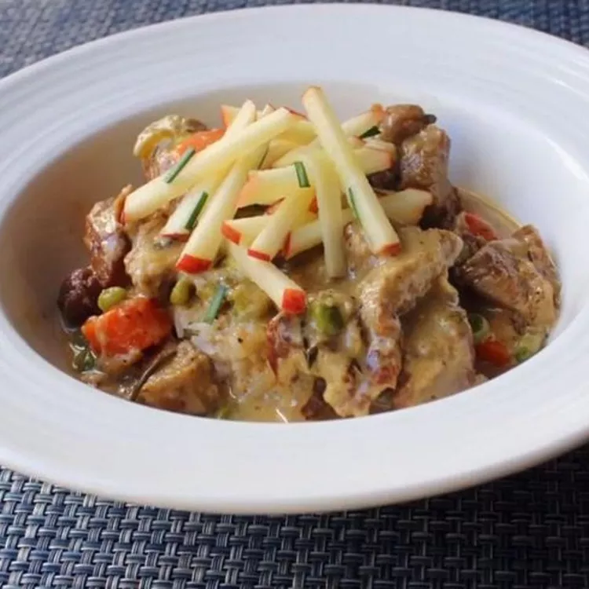

Creamy Pork Stew with Apples

Description
Ingredients
- 2 1/2 pounds pork shoulder, cut into 2-inch chuncks
- salt and freshly ground black pepper to taste
- 2 tablespoons vegetable oil
- 1 large yellow onion, chopped
- 3 cloves minced garlic
- 1/2 cup apple cider or apple juice
- 2 tablespoons apple cider vinegar
- 2 tablespoons Dijon mustard
- 1 tablespoon prepared horseradish
- 1 1/4 cups heavy cream
- 1/4 cup chicken broth or more as needed
- 4 sage leaves
- 2 sprigs thyme
- 2 small sprigs fresh rosemary
- 1 dried bay leaf
- 1 cup sliced carrots
- 1 stalk celery, sliced
- 1 pinch cayenne pepper
- 1/2 cup green peas, fresh or frozen
- 1/4 cup matchstick-cut apple strips
- 1 tablespoon chopped fresh chives
Steps
-
Season pork chunks generously with salt and pepper. Toss to distribute seasonings evenly.
-
Heat vegetable oil in a large pot over high heat. Brown pork in batches so meat isn't crowded, about 7 minutes per
batch. Transfer pork to a plate.
-
Place onions into the same pot; cook and stir until translucent and the edges brown, 3 or 4 minutes. Add garlic
and cook until fragrant, about 1 minute. Stir in apple cider and apple cider vinegar.
-
Add carrots, celery, and cayenne pepper; season with more black pepper. Leave uncovered and simmer until meat is
tender, about 1 hour. Add peas and simmer for 10 minutes. (Optional: for a thicker sauce, raise heat and simmer
until sauce is reduced, 5 to 8 minutes.)
-
Garnish individual servings with apple strips and chives.